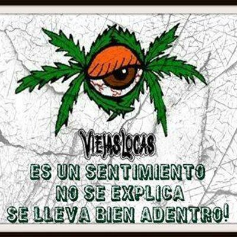
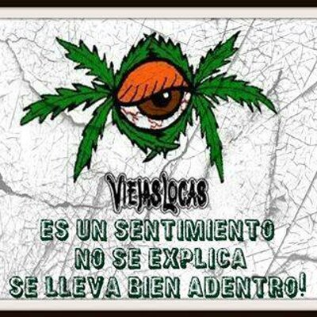

Discografia
- ¡¡Buen Día!! 2001 (Estudio)
- No es solo rock and roll 2003 (Estudio)
- Otro día en el planeta Tierra 2005 (Estudio)
- El exilio de las especies (Thend) 2008 (Estudio)
- Otra noche en la Luna 2020/2021 (En vivo)
Integrantes
- Pity Álvarez: voz y guitarra (2000-2009)
- Felipe Barrozo: guitarra y coros (2000-2009)
- Jorge Rossi: bajo y coros (2000-2009)
- Abel Meyer: batería (2000-2009)
- Adrián Pérez: teclado y coros (2000-2009)
- Ezequiel Rodríguez: armónica (2000-2009)
- Victor Djamkotchian: saxofón (2000-2009)
- Fabio Cuevas: percusión (2000-2009)
Historia
Intoxicados fue una banda de rock argentino formada en la ciudad de Buenos Aires. Surge a fines del año 2000, tras la separación de la banda Viejas Locas.
Intoxicados se caracterizó y diferenció del anterior grupo de Cristian "Pity" Álvarez debido a la apertura musical que presentaba a pesar de ser una banda de rock (interpretando estilos como el rock acústico, hip hop, reggae, funk, punk e incluso música electrónica)
La banda se disolvió en febrero del año 2009, después de anunciar un parate indefinido que continúa hasta la actualidad.El primer show se dio para tan solo unos pocos amigos en el ya desaparecido Mocambo de Haedo, donde tocaron algunos de los nuevos temas que venían ensayando y conociéndose más aún para la primera presentación que sería unos meses más tarde. Esta misma no se hizo esperar demasiado, el 26 de mayo de 2001 la banda dio su primer show oficial en el mítico Cemento para unas 2500 personas que colmaron la capacidad del lugar.
Galeria

 
